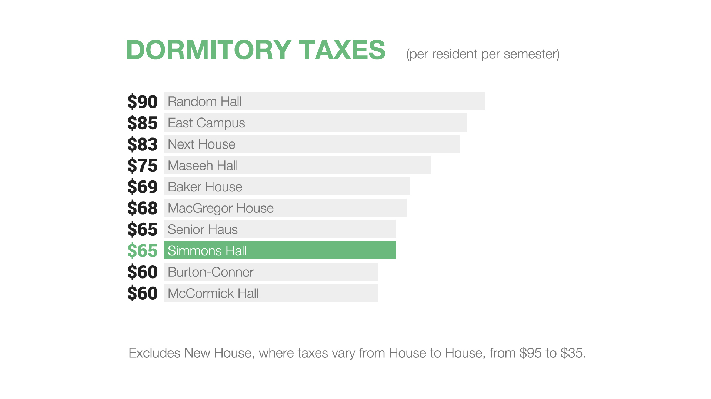
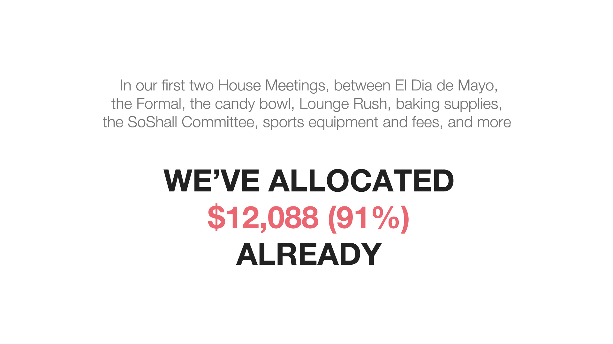
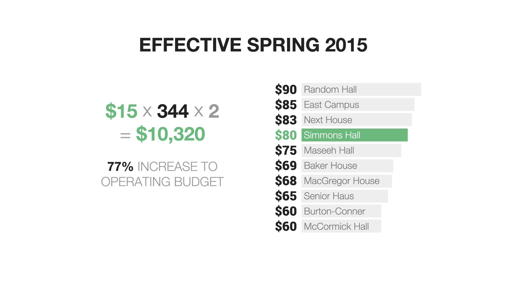

First, it may surprise folks to discover that our house tax is among the lowest taxes on campus.
The House Tax was initially set to $75, and then lowered to $65 in 2009. Lackluster involvement at the time meant the House was running a surplus. The proposal, presented as a humorous play on the then-ongoing financial crisis, was just for one year. Evidently, for whatever reason, it was never changed back.
In recent years, House participation has surged. An overwhelming majority of residents join
lounges. There is tremendous enthusiasm toward submitting proposals. There are no officer
vacancies, and few uncontested elections. Our high-profile events include one of the most
popular REX/CPW line-ups on campus.
But, the purchasing power of the House has eroded by almost a third due to inflation alone.
To make matters worse, much of Simmons’s revenue (taxes multiplied by population) is allocated
to Lounges and other fixed costs. Compared to similar dorms, our $30/person appropriation to
Lounges is unique.
While lounges are an integral part of what makes Simmons special, this unfortunately leaves
our operating budget (the money left for proposals) strikingly scanty.
This is particularly concerning in light of the fact that, in just the first two House Meetings, we have allocated almost our entire operating budget for the year.

This is not cause for immediate alarm. Allocating funding does not mean it all will be spent,
and we have significant reserves (approximately $29,000 at the start of this year) accumulated
from many years ago, which we can tap into.
However, unless we want to start voting down genuinely good proposals out of austerity, we
need to address the reality that, as it stands, we simply do not have enough revenue to sustain
all the amazing things that we collectively want to do as a dorm. If we value being able to
independently build a community that is uniquely our own, one that reflects our playful and
enthusiastic culture, we must make this a priority.
If approved, this modest change would nearly double our operating budget for general proposals, and put us upper-middle of the pack, between the aforementioned Maseeh and Next House. The change would take effect next term.
